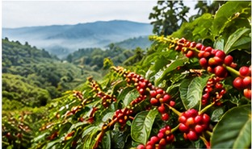
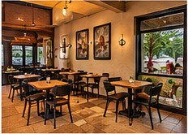
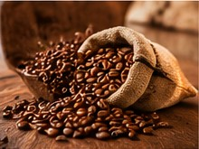
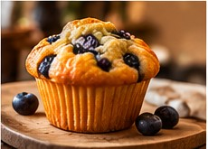
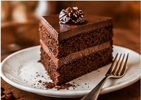
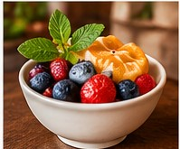
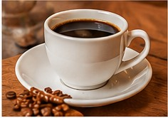
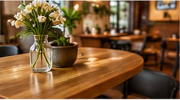

A peek inside
Our gallery
From the farms behind our beans to the treats and moments shared at our café.








A peek inside
From the farms behind our beans to the treats and moments shared at our café.







